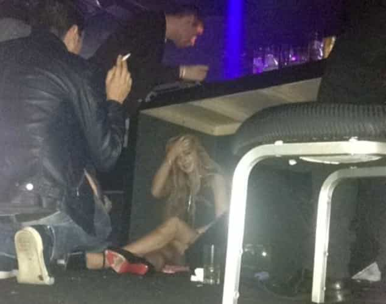
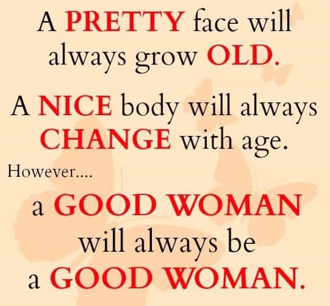
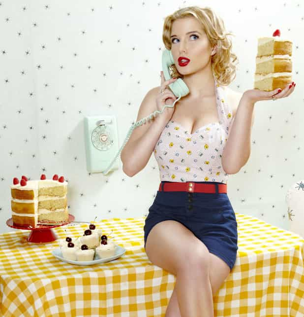

< < < Back
Men Should Not Help Sluts – Return Of Kings
Being out of town for two weeks I fell behind on the drama going on back home. I was, however, only slightly surprised when I showed up the house party and found an acquaintance I’m going to call Haylee having a screech at a friend I’m going to call Steve. From what I could sifter out of Haylee’s mood killing spaz attack, she and Steve had been knocking boots for the last little while and Steve – glorious poosy slayer that he is – had moved on to tighter horizons. Like most dumb women, Haylee seemed to think that, having slept with Steve, they were now somehow dating.
As much as I am amused by the consequences of their actions finally dawning on selfish people, I just wanted to relax and enjoy my first real night off. Steve, myself and a couple of other guys went to a different house party and had a good night.
Around two a.m. Steve’s cell phone began going crazy. “This bitch is psycho,” he said – there was no need to say that it was Haylee. We all knew it was. I sensed a bit of an article though, so I said he should answer her calls and put her on speaker phone. Steve, beautiful bastard that he is, did so.
“Steve?” Haylee asked. She was slurring, and it was obvious she had been crying. There was the usual Friday night cacophony behind her of laughing, screaming drunks. “Where the fuck are you?!”

“What do you want Haylee?” Steve asked.
“I don’t know where I am. I need a ride. I’m at the [club]. I need a ride can you get me?”
This girl had nearly ruined Steve’s night, and the party she was at. She had called him numerous foul names, threatened to post lies about him on the internet and call his parents and tell them, quote, “What a fucking piece of shit you are”; and now she was calling from a club (how heart broken she really must have been, to go out clubbing) telling Steve to come pick her up.
“Take a cab,” Steve said. He was grinning, clearly revelling in her drunken drama.
“I don’t have any moneyyy.” This might have been true, but it wasn’t our problem.
“Then find someone to give you a ride.”
“I want to talk to you. Please Steve pleaseee.”
He hung up. His cell phone went crazy for five more minutes and then fell silent. I thought it was over.
And then mine went off. I was getting a call from Andrew, another acquaintance of mine.
“Yeah?” I answered.
“Hey Billy? What’s up?”
Andrew wasn’t a good friend, nothing more then a drinking buddy really, so I wondered why the hell he was calling me.
“Nothing. What’s up with you?”
“Nothing. Hey man listen, I know it’s shitty to ask but could me and some other guys get a ride?”
I suddenly realized what was going on. I held the phone away from my mouth and said to Steve, “Haylee’s making Andrew try to get me to give them a ride.” I put it on speaker phone. “What do you need a ride for?
“We’re at the [club].” It was indeed the same as Haylee’s. “It’d be awesome if you could give us a ride Billy.”
I’m typically a nice guy to folks I know, and usually wouldn’t have had a problem doing so, but I knew what was going on here. Andrew was trying to be a white knight for Haylee.
“Who’s we?” I asked. “I’m not a taxi Andrew. I’m not gonna drive all over town dropping drunks off.”
“We’re all going to the same place man.”
“Who’s we.”
Andrew hesitated. He knew I now knew he was with Haylee, and he must have guessed I was with Steve. “Just some people. We’re all going to the same place.”
“Who’s we.” Then I heard Haylee in the background, asking if I was fucking coming yet. “You guys can take a cab.” I hung up, and we had a pretty good night.
I expected Haylee to show up at the house we were at and bring more negativity on us, but she didn’t. Of course the next day I got a text from her saying I was a jerk.

But why was I a jerk? Haylee wasn’t my girlfriend. She wasn’t a sister or cousin or any other sort of blood. Hell, she barely qualified as a friend. And even though it wouldn’t change the situation, I’d also never banged her. She’s just another entitled slut. Steve feels the same way. I talked to him about her, though I could easily have guessed how things went between them and still been right.
Haylee and he had gotten drunk a few weeks ago at a house party. She had blown him in the washroom. The next night she came over to his house and they banged. Then she started showing up randomly, wanting to watch TV or go do something – never on her own dime, of course. In short, she acted like they were dating, when Steve made it clear they were doing nothing of the sort, being rude to her, sending her home after each bang.
Haylee’s attitude, her lifestyle, is indicative of the average woman’s nowadays. Steve was the seventh person I knew she slept with. There have doubtlessly been many others. She gave her body up to him for nothing and then turned around and expected to be made a princess by Steve.
There’s a lot of that going around amongst today’s women. They act like whores then expect to be treated like girlfriends. They manipulate manginas and white knights into doing their dirty work, and then when called out on it they say that you’re the asshole. They live their lives by the motto that they don’t need no man, and then get pissed off when men aren’t there leaping forward and helping these awesome liberated women.
One needs only search such phrases as “Where are the real men,” “Where have all the good men gone,” and other such tripe to find many articles written by entitled sluts or their weak manslaves pondering why all these men they chastise or sleep with within hours of meeting them aren’t putting on their knightly armour and treating today’s whores like princesses. They wonder why men aren’t putting themselves in danger to save their material goods when for years men have been shamed for being manly.
You know the kind of women I help? Ones like my friend Christina. She’s engaged (at the ungodly age of 21, I know I know there’s just no helping some people) and I’ve known her for three years now, since she was 18, and she never ever got really drunk and went to clubs to grind on strangers junk or slept with randoms. She is pleasant to be around, bakes treats for us friends when she hears we’re going to be around town, and helps others as much as she can – she is a good person, not just an entitled slut who thinks herself a good person.

Even though Christina has never slept with me, or even kissed me, I still wound up driving two hundred kilometres in the middle of the night last summer because a disaster was happening at her house and her fiancée was almost five-hundred kilometres away working in the oil sands of Alberta and couldn’t be there to help her. Whenever she asks for a favour, if I’m capable of doing it for her, I do. And so do many other guys in my circle who know her – yes, even the player types. And none of us expect sexual favours, or rewards or other stupid crap. We help Christina out because she’s that increasingly rare pleasure one finds in their life – a decent woman.
She’s got her flaws, sure, but the mere fact that she acts like something resembling a caring human being means that we men treat her with respect and kindness. Steve, who would never give Haylee a ride two blocks to get a can of Pepsi even after she took his load, has gone out and helped Christina and her fiancée shovel out their car in the middle of a blizzard at midnight, when he had to work a hard construction job the next day at five. And he was glad to do it as I would have been. As many men would be, because decent guys look after decent people; regardless of whether they’re men or women.
The real men so many useless women and nutless men are complaining about nowadays treat others exactly how they deserve to be treated. There is no dearth of real men, or good men. We’re just responding to how we’re treated, and how we see others treating themselves. We don’t owe sluts our chivalry just because they need our help. They’re the ones who choose to live degenerate lives, thus creating a degenerate society; when the degeneracy finally comes home to them, it’s not our fault. It’s theirs. And no amount of shaming will convince real men otherwise. Good men have always and only helped decent people, and that will never change.
Read More: American Masculinity Is Based On Female Approval


{kind=link}
{kind=link}
{kind=link}